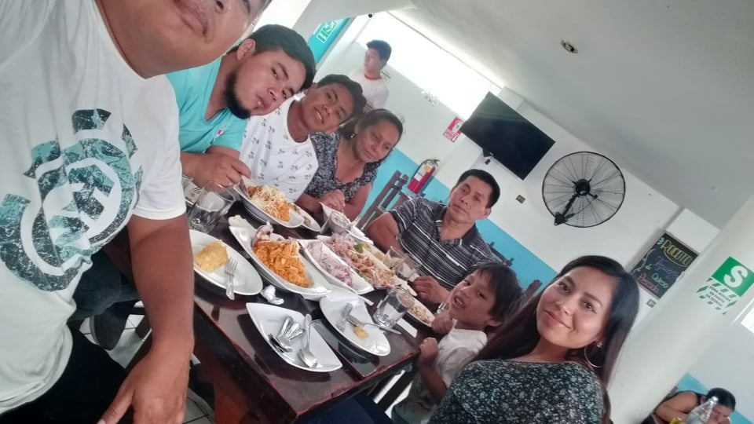

MIS HOBBIES Y DEPORTE FAVORITO
Mi deporte favorito es el futbol y mi equipo favorito es universitario de deportes.
Mis hobbies son
ESPECTATIVAS EN MI CARRERA
Las espectativas que tengo son muy grades en mi carrera, cuento con un gran profesor y compañeros con los cuales comparto informacion.
Con cada clase me empieza a interesar mas mi carrera, siempre busco mas informacion que me ayude con algunas cosas que no entiendo y para reforzar con los temas que ya entiendo
MI FAMILIA
Mi familia es muy tranquila, cuento con el apoyo de mis padres que es muy importante para mi , tengo 2 hermano que me apoyan mucho.
MIS METAS
PAGINAS DE MIS COMPAÑEROS